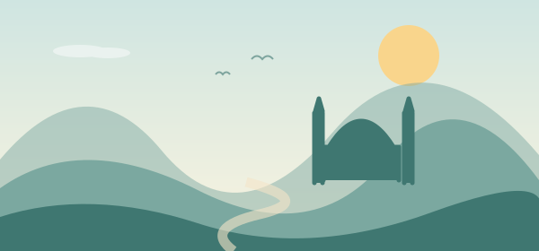

Her keşif bir kupa.
Her aşamanın kupa sistemindeki ilk tamamlanmasında 20 kupa kazan. 1000 kupayla prestijini yükselt.
Harfleri birleştir, zihnine küçük bir mola ver.
Türkiye’nin güzel köşelerinde kelimelerin peşine düş.
Android için APK · GitHub üzerinden indirme

Harika! Bir kelime daha keşfettin.
KALEBirleştir. Bul. Keşfet.
ÖZGÜN KELİME BULMACASI
KEŞFEDİLECEK BÖLGE
KENDİ HIZINDA BİR YOLCULUK
Her yeni kelime,
küçük bir iyi ki.
BİR OYUNDAN BİRAZ DAHA FAZLASI
Kısa bir molayı küçük bir keşfe dönüştür.
Her adımda yolculuğunu biraz daha sana benzet.
Her aşamanın kupa sistemindeki ilk tamamlanmasında 20 kupa kazan. 1000 kupayla prestijini yükselt.
Saçını, kıyafetini, gözlerini ve ifadeni seç. Şapkanı da tak; kendine özgü avatarınla yola çık.
Google, GitHub veya Yahoo hesabınla ilerlemeni eşitle. Başka bir cihazda aynı hesapla giriş yapıp kaldığın yerden devam et.
BİR SONRAKİ DURAĞIN NERESİ?
Şehrin ruhunu hisset, yeni bir bulmaca aç.
10 farklı bölge, keşfedilecek nice kelime.
HAZIRSAN YOLA ÇIKALIM
“Hemen indir” düğmesi seni oyunun en güncel sürüm sayfasına götürür.
Assets bölümündeki Kelime-Seyyahi.apk dosyasını seç. Oyun zaten yüklüyse silmeden üzerine güncelle.
Misafir olarak oyna ya da Google, GitHub veya Yahoo hesabınla giriş yap. İlk bulmacan seni bekliyor.
Android kurulum izni isteyebilir. Yalnızca güvendiğin kaynaktan indirdiğin APK için izin ver; kurulumdan sonra bu izni kapatabilirsin. Bu bağlantı Play Store’a değil, GitHub’a yönlendirir.
Hayır. Android APK’sını ücretsiz indirebilirsin. Normal altın/ipucu paketleri oyun altınıyla alınır. İsteğe bağlı Premium Seyyah 99,99 TL/yıl karşılığında sınırsız Harf aç sunar; satın alma için tirezteknoloji@gmail.com adresiyle iletişime geçilir. Otomatik yenileme yoktur.
Evet. 1.10.1 ile normal bölümler çevrimdışı oynanabilir; ilerleme cihazda korunur. Hesap eşitleme, Premium doğrulaması ve güvenli görev ödülleri bağlantı gerektirir. Cihaz değiştirmeden önce Profil → Şimdi eşitle bölümünden bulut kaydını doğrula.
Mevcut uygulamayı silmeden üzerine güncelle. Aşama ve cüzdanın korunur. Yeni kupa sisteminde eski puanlar kupaya çevrilmez. Başka cihaza geçmeden önce mevcut cihazdaki Google hesabını eşitle.
Burada sunulan indirme Android için APK dosyasıdır. iPhone’a kurulamaz; bu sayfada bir iOS sürümü sunulmuyor.
YENİ · 30 GÜNLÜK KEŞİF DEFTERİ
Altın ve ipucu ödülleri kazan. 6 yeni avatar seçeneğini aç, 8 başarı rozetini topla. Kaçırdığın görevler kaybolmaz; yeni bölümleri sırayla, beklemeden oynayabilirsin.
HER YOLCULUK BİR KELİMEYLE BAŞLAR
Bir mola ver. Harfleri birleştir. Yeni bir yer keşfet.